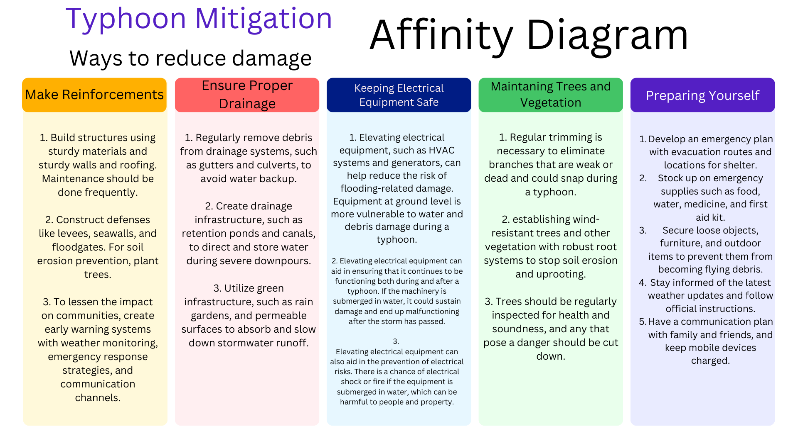
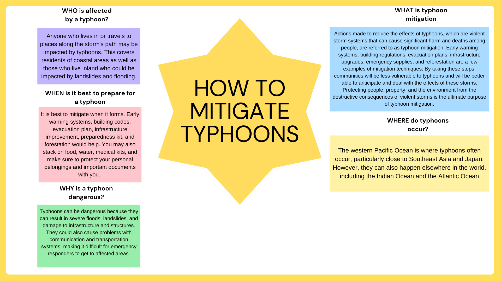
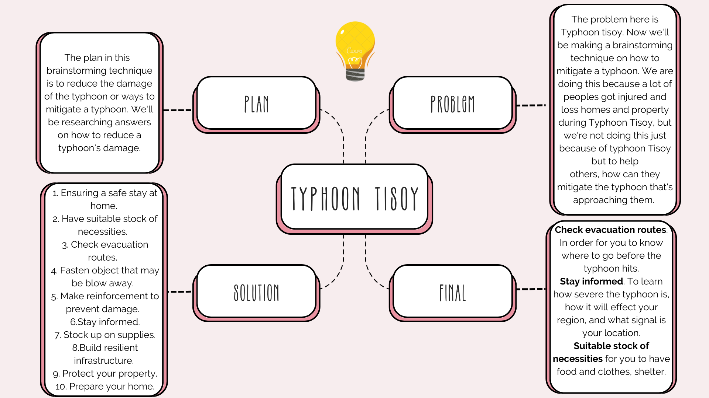
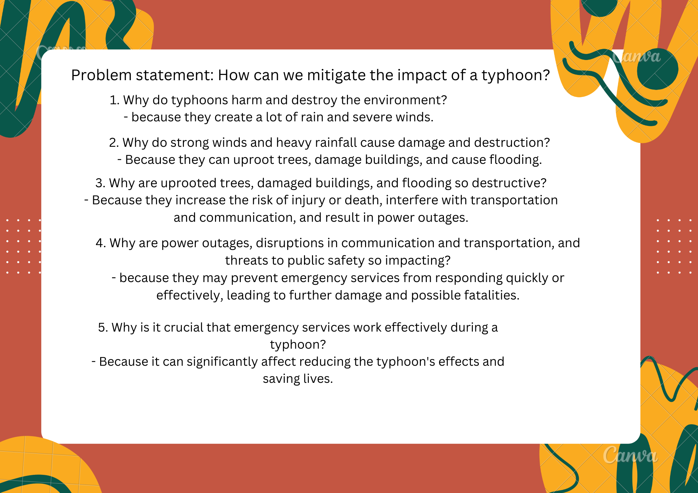

Mitigation of Typhoon using Brainstorming Methods
Diagram

Starbursting

Mind Maps

5 (Five) Whys

Recommendation
Recommendations. These are our recommendations before, during, after the typhoon happened.
Before
Prepare an emergency bag
Before a typhoon hits you should have an emergency bag. The emergency bag should be filled with extra clothes, medicine, food, important documents and duplicated house keys.
Stock up supplies
Prioritizing obtaining enough food and water for the entire household for at least three days before a typhoon strikes should be your first priority. Make sure there is adequate food and drink available for your dogs as well. You should save water for washing as well. Purchase food items that you won't have to heat in order to consume. Products like sausages, canned tuna, pork and beans, and other rapid meals are wonderful choices.
Withdraw cashes
A good number of people have a reliance on online banking, but you’re going to need cash in case of emergencies.
During
Don’t look outside. Windows can easily shatter at high speeds. Staying inside and staying put is the safest way to go through a typhoon. Check to make sure everyone is there and to get the latest weather and road reports, turn the radio to an AM channel.
Last but not least, make an effort to relax. To help reduce your worry during the worst of the typhoon, prepare goods like cushions, blankets, and anything to help quiet and ground you. To pass the time, you may even arrange card games and board games.
Living through a devastating typhoon is a difficult experience, and feeling frightened, upset, and generally agitated is typical. All of these sensations are OK, but some of them may be lessened by planning beforehand.
After
Verify all the supplies you prepared in advance of the typhoon. Verify that the water is clean and that the food is all still good. If your region was seriously impacted, you might need to restrict these items.
Keep the radio on and listen for any updates regarding the local weather.